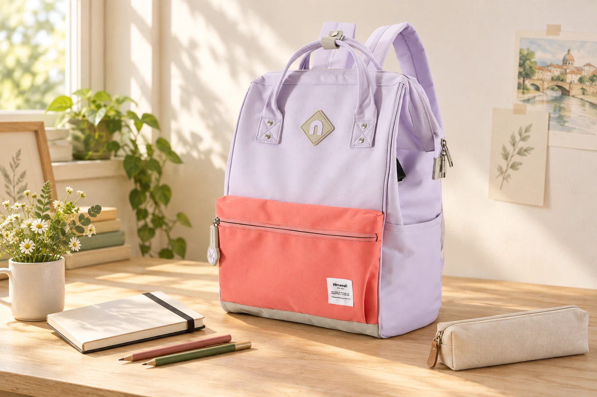

주말 드로잉 백팩: 한 장을 그리러 나가는 가벼운 준비

주말에 그림을 그리러 나갈 때 작업실의 도구를 전부 챙길 필요는 없습니다. 오늘은 작은 스케치북에 연필로 한 장만 그려보는 외출을 생각해 보세요. 가방을 준비하는 기준도 많이 담는 능력보다, 앉은 자리에서 필요한 도구를 간단히 꺼낼 수 있는지로 달라집니다.
오늘 그릴 한 장부터 정하기
건물의 창문, 나무 한 그루, 산책길의 벤치처럼 그리고 싶은 대상을 하나 정합니다. 연필 드로잉이라면 스케치북, 평소 쓰는 연필, 지우개를 먼저 놓아보세요. 처음부터 물감과 여러 종류의 도구를 더하기보다 오늘 하려는 표현에 필요한 것부터 골라 담습니다. 그리는 시간이 짧다면 익숙한 도구가 준비와 정리도 단순하게 만들어 줍니다.
스케치북은 그림을 꺼내는 방향으로
스케치북의 제본 방향과 여닫는 방식에 따라 잡기 편한 쪽이 다릅니다. 넣을 때부터 손으로 잡을 면을 위로 향하게 해보세요. 표지와 고무 밴드를 포함한 실제 크기가 입구를 통과하는지 확인하고, 제본 고리가 안감에 걸리지 않게 얇은 보호 커버를 사용할 수 있습니다. 가방 안에 들어간다는 이유만으로 큰 스케치북을 구부려 넣지는 마세요.
연필 끝과 지우개 가루는 필통 안에
연필은 캡을 씌우거나 길이가 맞는 필통에 넣어 끝이 원단에 직접 닿지 않게 합니다. 지우개도 포장이나 작은 케이스에 넣으면 사용한 면이 다른 물건에 묻는 일을 줄일 수 있습니다. 밖에서 연필을 깎아야 한다면 부스러기를 담는 통이 있는 연필깎이처럼 정리할 방법까지 준비하세요. 사용한 도구를 가방 바닥에 바로 넣지 않는 것이 핵심입니다.
그리는 자리에서는 한 묶음만 펼치기
도착하면 앉아도 되는 자리인지 확인하고, 가방은 통행을 방해하지 않는 안정된 곳에 둡니다. 스케치북과 필통만 먼저 꺼내고 가방 입구를 닫아두세요. 물건을 하나씩 주변에 흩어놓지 않으면 자리를 옮길 때도 한 묶음으로 챙길 수 있습니다. 그림에 집중하더라도 휴대전화와 지갑의 위치는 따로 확인합니다.
돌아오는 길에 다음 한 장을 준비하기
출발 전과 같은 도구가 돌아왔는지 확인하고, 사용한 지우개와 연필을 필통에 넣습니다. 집에서는 스케치북을 꺼내 펼쳐 보고 실제로 쓰지 않은 도구를 기억해 두세요. 다음 외출에서 뺄 수 있는 물건이 생기면 준비가 더 가벼워집니다. 사진 속 No.9004는 이 장면을 표현한 제품 예시이며, 본인의 스케치북이 들어가는지는 선택한 옵션의 실제 수납 정보를 확인해야 합니다.
참고·안내
- Himawari No.9004 제품 정보
- 실제 No.9004 라벤더 코랄 제품 사진을 참조한 AI 연출 이미지입니다. 스케치북과 필기구 등 소품은 구성품이 아닙니다.
자주 묻는 질문
수채화 도구도 같은 방식으로 담으면 되나요?
이 글은 마른 연필 도구로 하는 짧은 드로잉을 기준으로 합니다. 물통과 젖은 붓을 쓴다면 밀폐와 분리 보관을 별도로 준비하고, 각 도구의 보관 안내를 확인하세요.
사진에 보이는 스케치북이 No.9004에 들어가나요?
연출 사진은 수납 크기를 증명하지 않습니다. 제본과 커버를 포함한 실제 스케치북 치수를 상품의 입구와 내부 치수에 대조해 확인하세요.